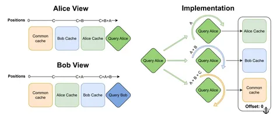

Сегодня — статья инженеров Yandex Research, HSE и IST Austria. Речь в публикации идёт о Hogwild! Inference — движке параллельного инференса для LLM.
Авторы задались целью ускорить выполнение задачи одной моделью за счёт параллельной генерации. При этом инференс должен был оставаться интуитивно простым, а фреймворк — достаточно гибким, чтобы сделать эффективной коммуникацию между параллельными ветками генерации. Наконец, авторы стремились к тому, чтобы характер взаимодействия инстансов зависел в первую очередь от самой модели, а не от фреймворка параллельной генерации, то есть оставить принцип параллельной работы на откуп самим моделям.
Метод Hogwild! Inference предполагает использование нескольких экземпляров LLM — они называются «рабочими» (workers), — которые выполняют одну задачу параллельно, синхронизируясь через общий KV-кэш. Это позволяет им видеть и учитывать генерации друг друга в реальном времени. Идея в том, чтобы дать моделям возможность самим организовывать координацию без заранее заданных правил взаимодействия.
В этот общий KV-кэш каждый рабочий добавляет свои токены, которые затем дополняют общий контекст. Кэш организован как чат: завершённые абзацы reasoning каждого рабочего перемещаются в «историю», а текущие абзацы остаются в отдельном сегменте. При этом каждый рабочий видит текущую работу других — всё благодаря разделённым KV-блокам.
Чтобы избежать повторной обработки представлений на каждом шаге, авторы предлагают использовать свойства RoPE: для генерации нового токена каждым из рабочих блоки KV-кэша упорядочиваются по-разному для каждого рабочего (см. изображение). При этом сдвиг осуществляется не над всем блоком, а над query-токенами, что резко снижает вычислительные издержки. Таким образом, каждый рабочий может видеть новые токены других рабочих сразу после их генерации.
Система использует zero-shot prompting: рабочим предлагается обсуждать решение задачи, разделять работу между собой, не дублировать друг друга. Также авторы используют специальные интервенции в процесс генерации, чтобы сократить случаи, когда несколько рабочих совершают одну и ту же работу. Каждую N токенов одному из агентов подсовывается промпт вида «Делаю ли я лишнюю работу?» и предлагается ответить «да» или «нет». Эксперименты показывают, что такая вставка часто позволяет рабочему понять, что его работа уже сделана другим и можно двигаться дальше, либо изменить свою стратегию решения задачи.
Авторы оценивают Hogwild! Inference на задачах, требующих длительных рассуждений и предполагающих тривиального разбиения на независимые подзадачи: LIMO, LiveCodeBench, OlympiadBench, AIME. Эксперименты на разных моделях (Qwen3, QwQ, Deepseek R1, Phi4-R) показывают, что метод позволяет решать задачи за меньшее число последовательных шагов, чем обычная генерация. Например, QwQ-32B в LIMO (817 задач на математику) c использованием Hogwild! даёт прирост точности до 0,6 при 4000 токенах, в то время как бейзлайн — на уровне 0,4. Эксперименты также подтверждают масштабируемость: при двух рабочих генерация ускоряется в 1,8 раза, при четырёх — в 3,4.
Разбор подготовил
Душный NLP
